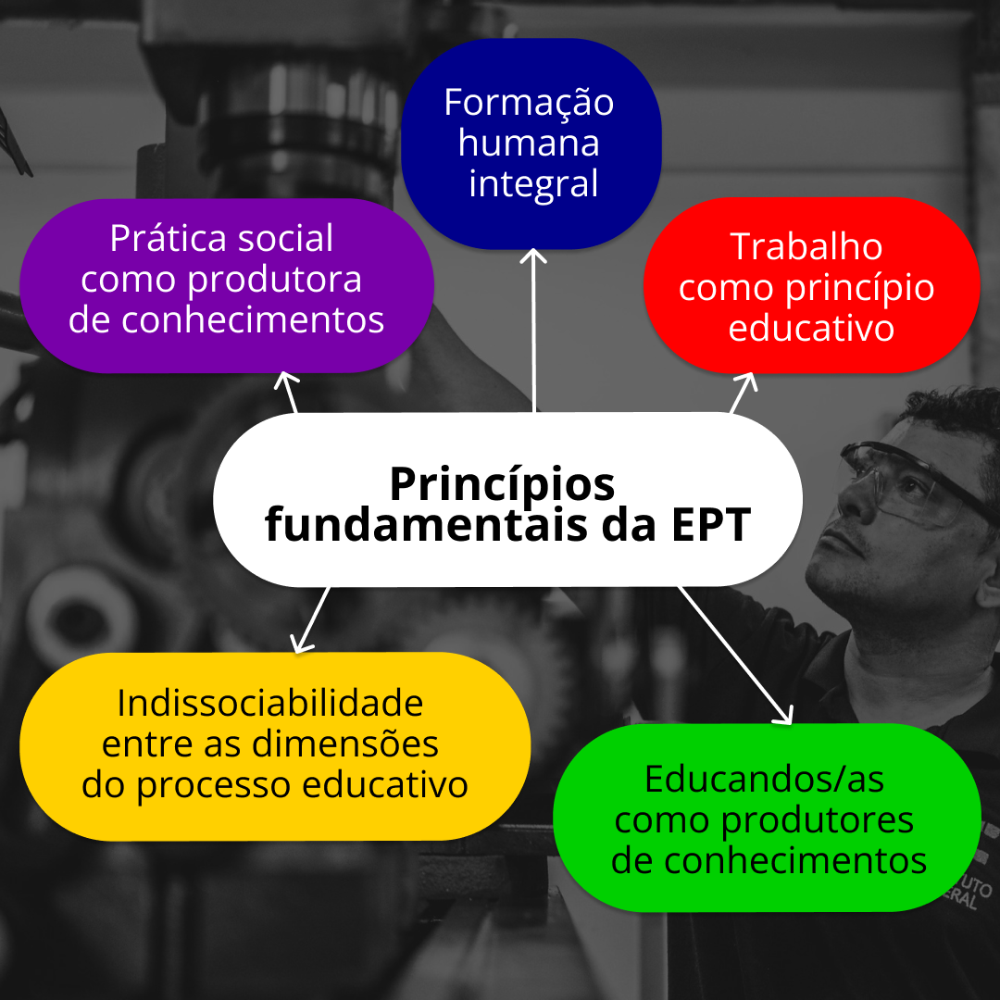

A EPT no Brasil constituiu-se assentada em uma sociedade com uma mentalidade escravocrata e fragmentada em classes sociais. O pensamento escravocrata tem menosprezo pelo trabalho manual e prático, o qual é destinado, segundo ele, à classe trabalhadora. Esse entendimento sustenta um discurso e uma política de que, para desenvolver determinada atividade prática ou determinado ofício, não é necessário um arcabouço científico e humanístico, hierarquizando, assim, saberes e fazeres, colocando uns como mais importantes do que outros.
Essa sociedade que separa o trabalho manual do trabalho intelectual, do fazer e do pensar, e estabelece trabalhos próprios da classe trabalhadora e outros próprios para os que controlam a força de trabalho e os meios de produção, assim o faz para a manutenção de seus privilégios e lucros.
O Brasil Colônia foi marcado pelas relações de trabalho escravistas. Nesse cenário, e ao longo de quatro séculos de colonização, o trabalho era uma atividade que indicava desqualificação, estava nas mãos de quem era percebido em condição sub-humana.
Essa visão se perpetua na sociedade brasileira a partir da manutenção das desigualdades sociais profundas, de um racismo estrutural, das manifestações recorrentes de violência de gênero etc. A educação profissional passa a ter atenção, sem a perspectiva assistencialista que marca a sua origem, com o processo de consolidação republicana.
Nessa esteira, as orientações que subsidiaram historicamente as políticas educacionais brasileiras resultaram/resultam das alterações das formas de organizar a produção capitalista ao longo do tempo. Isso evidencia que as várias mudanças conjunturais apresentaram e apresentam tensões e conflitos.
Frigotto (2001) alerta que é preciso ter a capacidade coletiva de distinguir o projeto de educação profissional que subordina suas finalidades aos interesses do mercado do projeto que se apresenta numa perspectiva de emancipação da classe trabalhadora.
O papel central da educação profissional passa a ser um projeto educativo em meados do século passado. Esse projeto é para desenvolver conhecimentos que serão apropriados socialmente para a transformação das condições de vida, de ampliação das potencialidades e sentidos humanos na perspectiva do trabalho como princípio educativo. Essa mudança do papel da educação profissional ocorreu a partir dos movimentos sociais, em especial de operários.
Com isso, queremos problematizar as condições históricas do trabalho configuradas pelo modo de produção e as relações sociais que se estabelecem por meio das condições de exploração do trabalho humano, bem como compreender a indissociabilidade entre trabalho e educação, considerando as implicações de uma educação como uma totalidade social que comporta mediações históricas, políticas, econômicas e culturais, em que os processos educativos se tornam efetivos.
Por sua vez, a especificidade da educação profissional agrega a dimensão intelectual ao trabalho produtivo, com vistas à formação humanizadora de trabalhadores. Os conhecimentos humanísticos e científico-tecnológicos sustentam a adoção de uma posição crítica às contradições do mundo social e se tornam instrumentos de transformação, como também propiciam trabalhadores capazes de atuar como dirigentes e cidadãos.
A proposta aqui apresentada é refletir sobre a EPT na sua historicidade, desde as legislações que a configuram e que têm na sua origem o assistencialismo; a seguir, a formação estritamente prática e em uma perspectiva de uma educação “inferior” que reitera a dualidade estrutural entre educação propedêutica direcionada ao trabalho intelectual (dirigentes) e a educação profissional direcionada ao trabalho manual (trabalhadores), estabelecida desde a sua origem.
Durante o período ditatorial no Brasil (1964-1985), a rede federal se consolidou qualitativamente como um espaço estratégico de discussão progressista, aberta à reflexão materialista e dialética, voltada à educação tecnológica, na busca de uma formação humana integral e emancipatória.
No entanto, ao retorno da democracia e sob a gestão neoliberal dos governos de Fernando Henrique Cardoso (1994-1997, 1998-2002), o que se assistiu foi o retrocesso. A educação profissional ficou reduzida a cursos rápidos, instrumentais, voltados a mercados de trabalho que demandavam uma formação técnica destinada exclusivamente às atividades laborais de menor qualificação.
Por fim, nos governos conduzidos pela frente capitaneada pelo Partido dos Trabalhadores (2003-2016), o campo da educação profissional foi novamente mobilizado para discutir a retomada de um projeto de formação integral que superasse a dicotomia entre ensino geral propedêutico e o ensino técnico profissionalizante. Era a oportunidade da retomada do ensino médio integrado à educação profissional e todos os princípios que orbitam na sua concepção:

Título: Princípios da EPT
Fonte: Ministério da Educação (2024).
Elaboração: Prosa (2024).
Então, chegamos ao equilíbrio entre o trabalho manual e o trabalho intelectual? Na sua instituição de ensino, você reconhece no currículo, nas práticas pedagógicas e de gestão a separação entre esses saberes e fazeres?
Após o golpe que levou ao impeachment da Presidenta Dilma em 2016, a EPT teve o seu processo de consolidação estagnado e confrontado pela promulgação da Lei nº 13.415/2017, que alterou a Lei de Diretrizes e Bases da Educação Nacional (LDB) e introduziu uma mudança na estrutura do ensino médio. Essa mudança se apoia na Base Nacional Comum Curricular (BNCC), que estabelece um ensino com diferenças significativas que tornariam ainda mais aprofundada a dualidade do ensino. Um novo projeto que ameniza aspectos frágeis da educação básica está atualmente em trâmite, após educadores e estudantes firmarem ações de resistência.